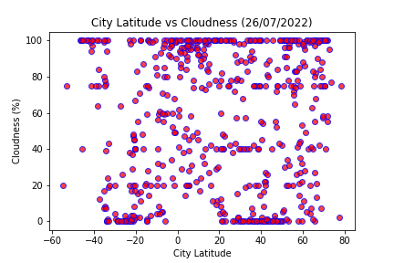

City latitude and wind speed don't have a clear trend. There are cities that will have windy and/or calm days and the distance between a city and the equator is less likely to be a factor that influences wind speed.
